Ricette vere, recuperate con cura.
Una selezione essenziale dell’archivio Cucinare Creare: piatti italiani, preparazioni tradizionali e idee di Anna.
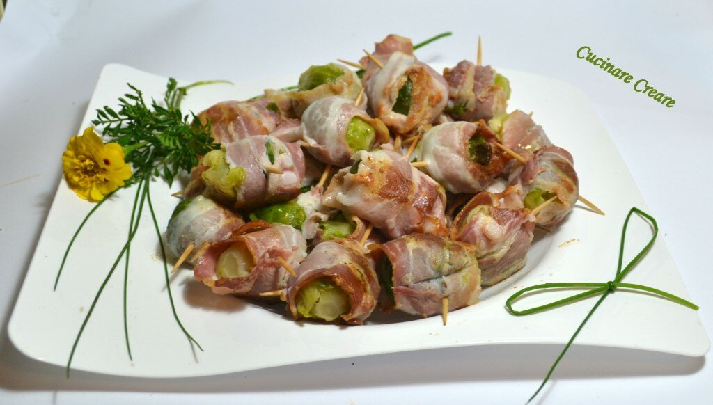
Bocconcini di cavoletti e pancetta
Ingredienti per 4 o 5 persone: una confezione di cavoletti di Bruxelles 20 fettine di pancetta affumicata sale e ac…
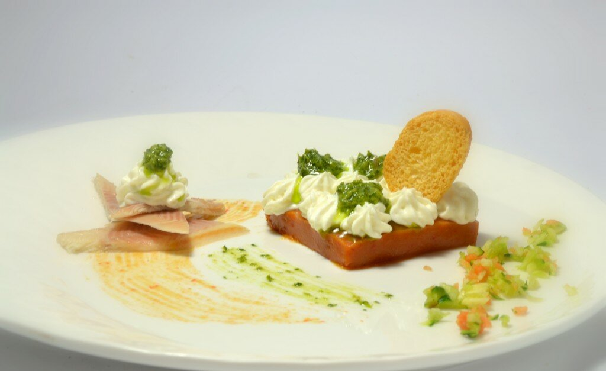
Tortino gelè di anguilla affumicata e mousse di formaggio
Ingredienti per 4 persone: 200 grammi di anguilla affumicata di Agroittica Lombarda 100 grammi di salsa di pomodoro…

Punta di vitello al forno con cipolle e mele brasate
Ingredienti per 4 persone: 1 kilogrammo di carne (punta di vitello) olio di oliva 2 noci di burro patate per contor…
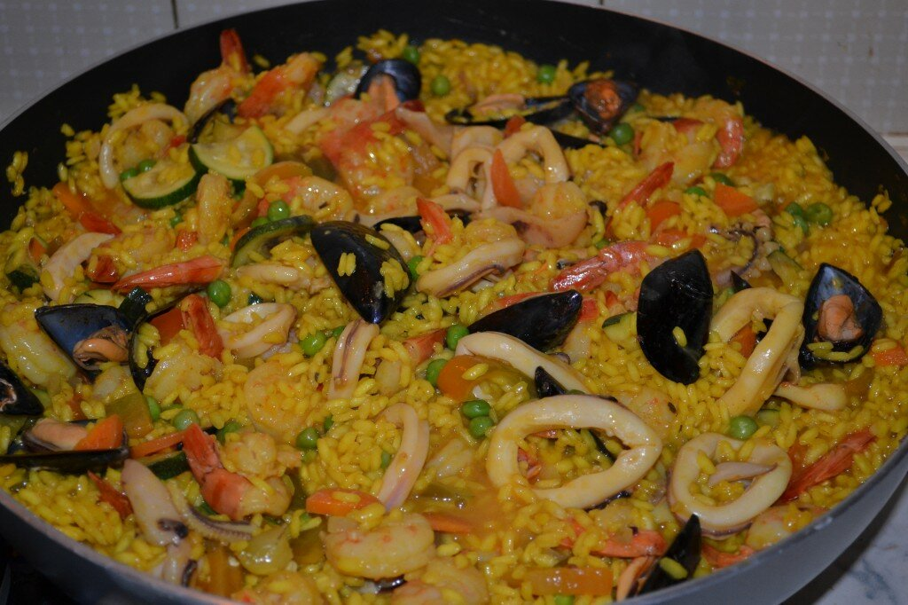
Paella catalana (di pesce)
Ingredienti per 5 persone: 400 grammi di riso (grano grande) 30 cozze e/o vongole 1 calamaro grande (e/o altri cros…

Porcetto sardo (tipica ricetta sarda)
Preparazione per 3 persone 1 cosciotto di maialino da latte (o carrè di maiale) sale patate per contorno Questo cos…
Salmone filetto con pomodorini e olive nere
Ingredienti per 4 persone: 4 filetti di salmone Olive nere e pomodorini datterini Olio evo Vino bianco Sale e pepe …
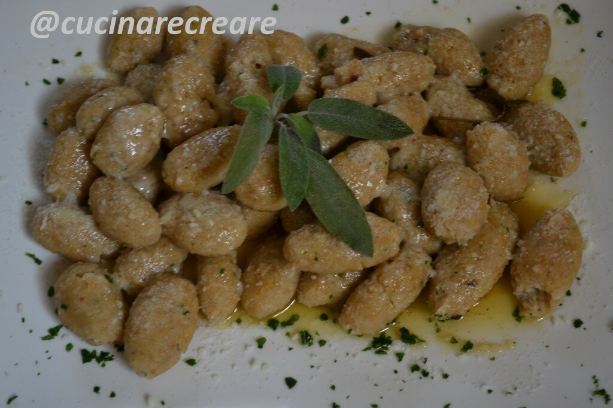
Capunsei “gnocchi mantovani”
La ricetta di questo piatto tipico mantovano mi arriva dalla Signora Franca una “mantovana DOC”. Ingredienti per 7 …

Torta mantovana di tagliatelle
Ingredienti per la base di pasta frolla: 250 grammi di farina 100 grammi di burro 90 grammi di zucchero 2 tuorli sa…
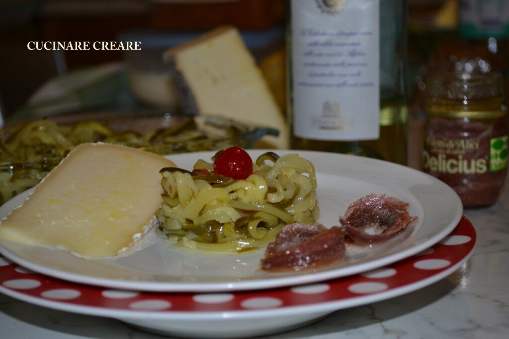
Zucchine all’agrodolce
Ingredienti: 3 zucchine 200 ml di vino bianco 200 ml di aceto di mele 50 grammi di sale 50 grammi di zucchero 500 m…
Tonno fresco marinato al pepe verde
Ingredienti per un antipasto di 5 persone: 2 fette alte mezzo centimetro di tonno freschissimo olio extra vergine d…
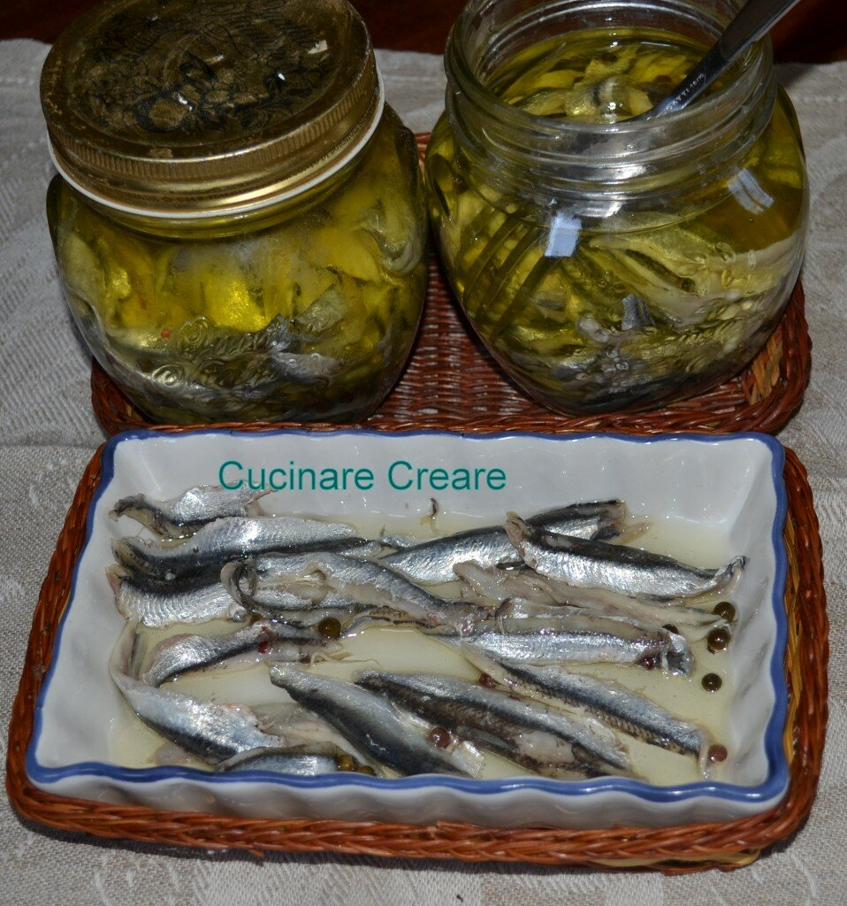
Alici sott’olio marinate
Ingredienti: alici freschissime olio di oliva pepe fresco in grani aceto bianco sale ghiaccio Preparazione: delisca…
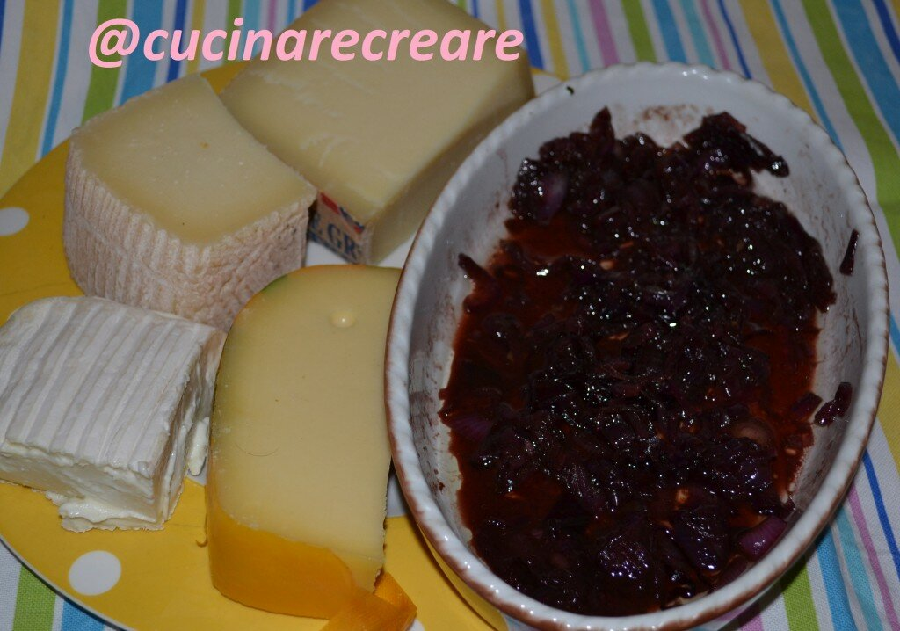
Cipolle caramellate (crema)
Ingredienti: 3 cucchiai di olio di oliva 5 cipolle rosse di Tropea 2 cucchiai di zucchero un pizzico di sale mezzo …
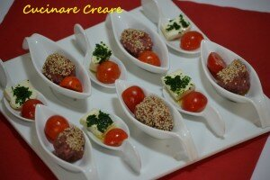
Antipasti fantasia al cucchiaio – Fancy appetizer to the spoon
Ingredienti per 5 porzioni: 200 grammi di carne macinata scelta 10 olive nere 10 olive verdi 10 capperi 50 grammi d…

Salame ai ferri “brasaroel”
Ingredienti per 6 persone: 1 salame fresco 5 – 6 patate 50 grammi di burro 200 ml di latte 50 grammi di formaggio g…
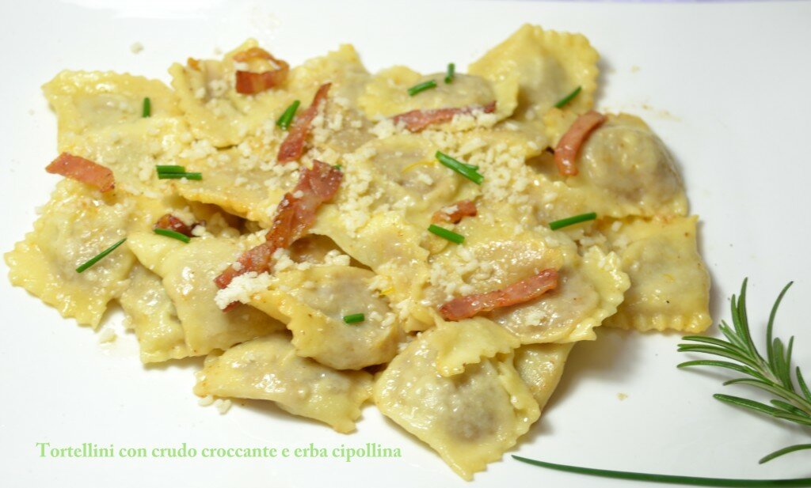
Quadrucci alla carne con sugo al prosciutto crudo croccante
Ingredienti per 4 – 5 persone: per la pasta: 3 etti di farina 00 3 uova intere per il ripieno: 200 grammi carne mac…

Tagliata di manzo con crema alla senape – sliced beef with mustard cream
Ingredienti: 1 kilogrammo circa di carne adatta per tagliata (fatevi consigliare dal macellaio di fiducia, non occo…

Spiedini di frutta brinati
Ingredienti: arancia fragole banane mandarini kiwi mela Preparare degli spiedini alternando la frutta fresca di sta…

Stracotto di guanciale di manzo al Barbera
Ingredienti per 4 persone: 2 guanciali di manzo (se non li trovate usare il cappello del prete) 50 grammi di burro …
Tartare ricca su cestino di pane
Ho comprato questi cestini di pane fatti da un fornaio e li ho trovati molto interessanti per servire un’insalata m…

Polpette di ragù e Salsa allo Yogurt
Ingredienti per 4 persone POLPETTE: 300 grammi di ragu’ di carne 1 uovo 50 grammi di formaggio grattugiato pane gra…
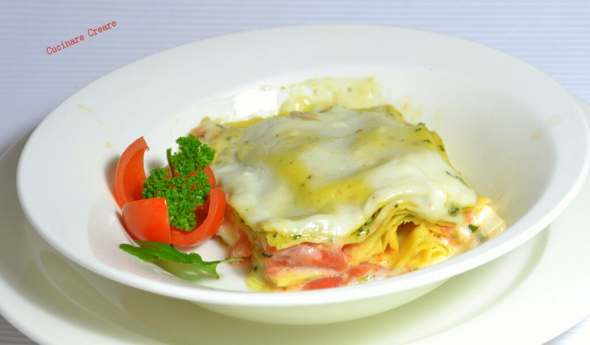
Lasagne al pesto, pomodorini e mozzarella
Ingredienti per 4 persone: 500 grammi circa di pasta fresca per lasagne ( vedi ricetta ) 200 grammi di pesto genove…
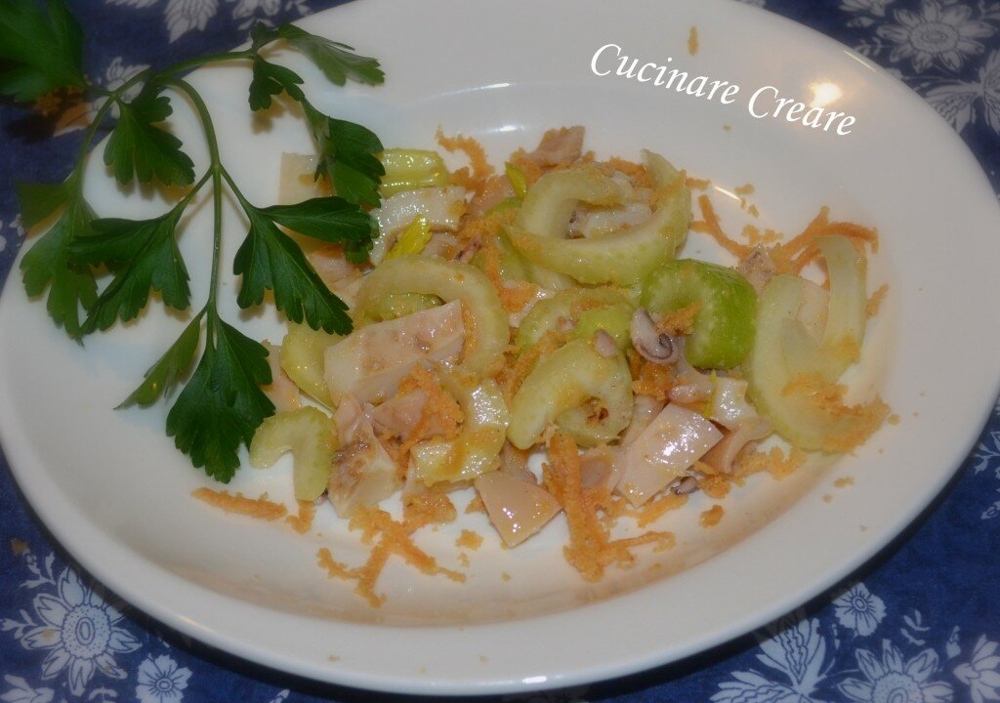
Insalata di seppia, sedano e bottarga
Ingredienti per 4 persone: 1 seppia medie dimensioni 5 coste di sedano bianco freschissimo scaglie di Parmigiano Re…

Coppa al forno con crema di porri e verdure
Ingredienti: 1 coppa di maiale fresca sedano, carote e cipolle olio di oliva vino bianco secco sale, pepe e aromi m…
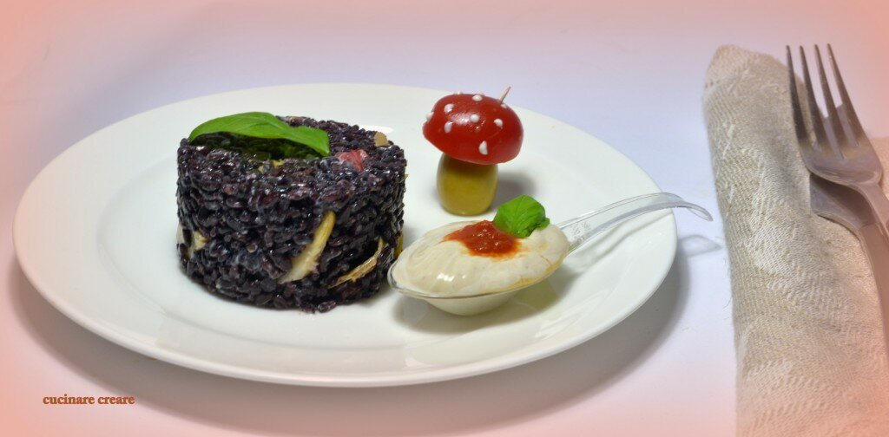
Tortino di riso venere con crema al formaggio
Ingredienti per 4 persone: 300 grammi di riso venere carciofini sott’olio pomodorini pachino olio extra vergine di …
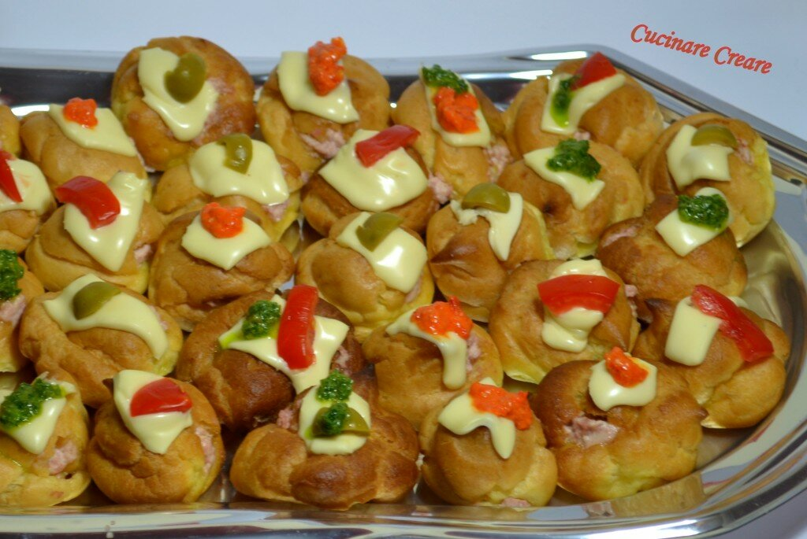
Bignè salati farciti con mousse di mortadella
Ingredienti per realizzare circa 50 bignè: Ingredienti per circa 50 bignè 150 grammi di farina 4 uova 100 di burro …

Crostata dolce con crema di zucca e ricotta
Ingredienti: 350 grammi di farina 180 grammi di burro morbido a pezzetti 150 grammi di zucchero 3 tuorli d’uovo 3 c…
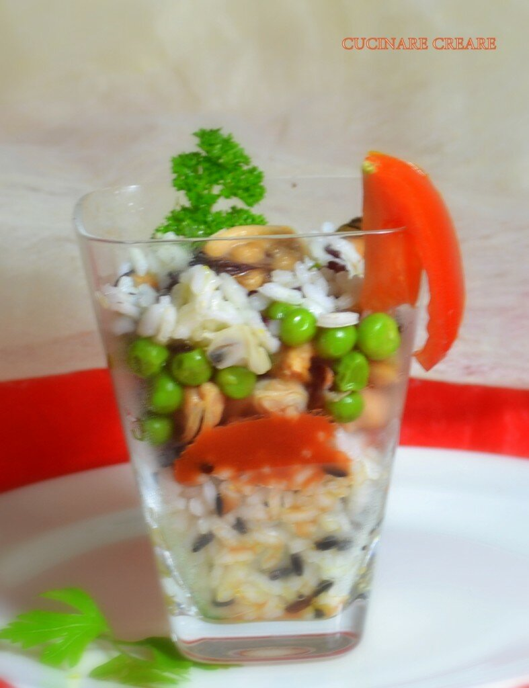
Insalata di riso e molluschi
Ingredienti per 2 persone: 2 pugnetti di riso (vialone nano e qualche chicco di riso venere) 50 grammi di pisellini…

Spezzatino con funghi porcini, piselli e polenta
Ingredienti: 500 grammi di carne di manzo spezzatino 1 confezione di funghi porcini surgelati o fre3schi 1 cucchiai…
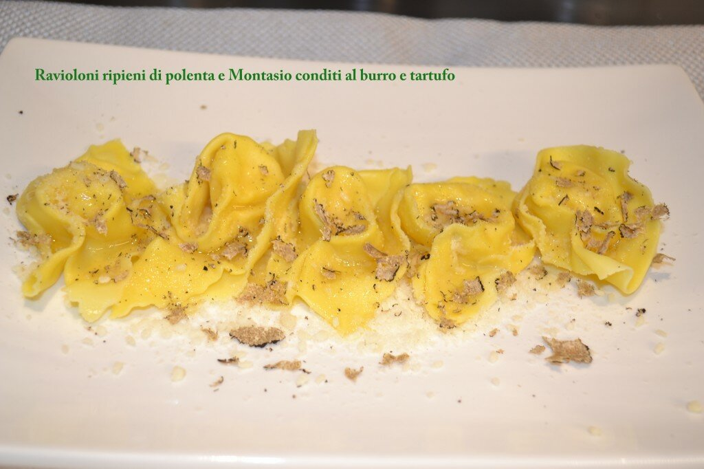
Ravioloni ripieni di polenta e Montasio conditi con burro e tartufo
Ingredienti per 6 persone: * Per la pasta: 400 grammi di farina e 4 uova * Per il ripieno: 500 grammi circa d…

Cestini di pasta brisè con frutti di bosco
Ingredienti: 1 pasta brisè frutti di bosco zucchero a velo Preparare tanti dischetti tagliando la pasta brisè con u…
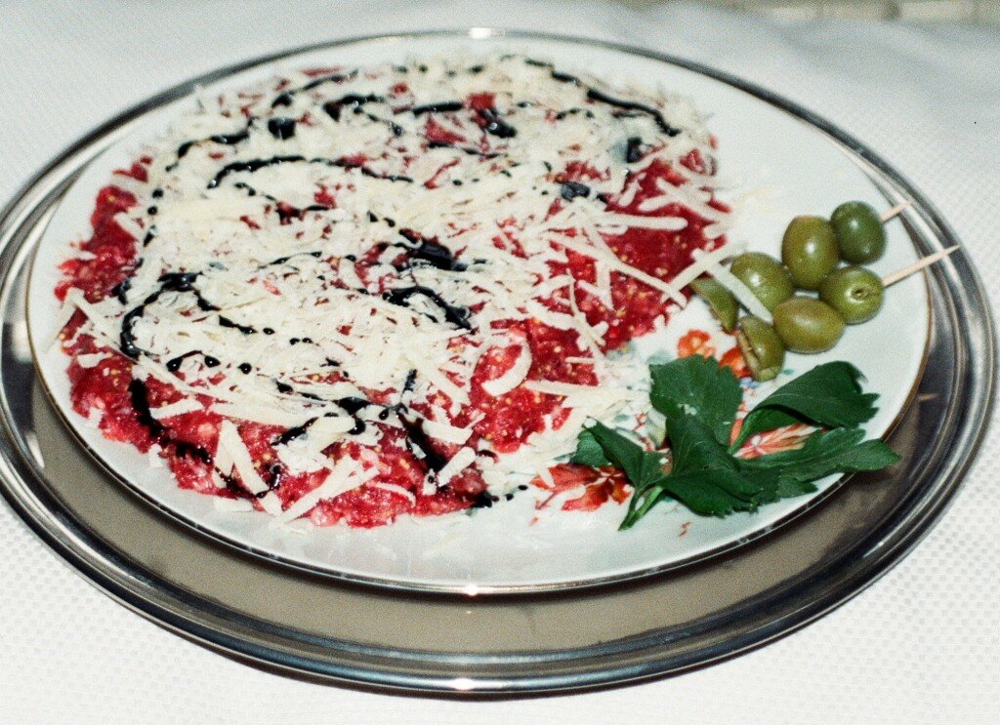
Menu’ di aprile
CLICCA LA FOTO E VEDI RICETTA Antipasto: Tartare gustosa Primo piatto: capunsei mantovami “gnocchi di pane” Secondo…
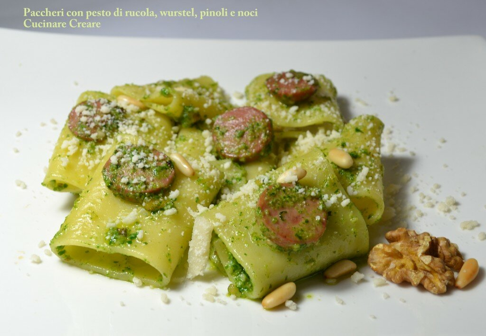
Paccheri al pesto di rucola, wurstel, pinoli, noci
Ingredienti per 4 – 5 persone: 400 grammi di paccheri 1 conf. di wurstel grandi 1 mazzetto di rucola olio E.V.O. sa…

Arrosto con contorno di castagne
Ingredienti per 6 persone 1 kilogrammo di scamone di manzo 2 cucchiai di olio 1 cipolla 2 bicchieri di vino bianco…

Arrosto di vitello con miele e brandy
Ingredienti per 5 persone: 1 kilogrammo di carne di vitello farcita con pancetta (fate preparare questo al vs macel…
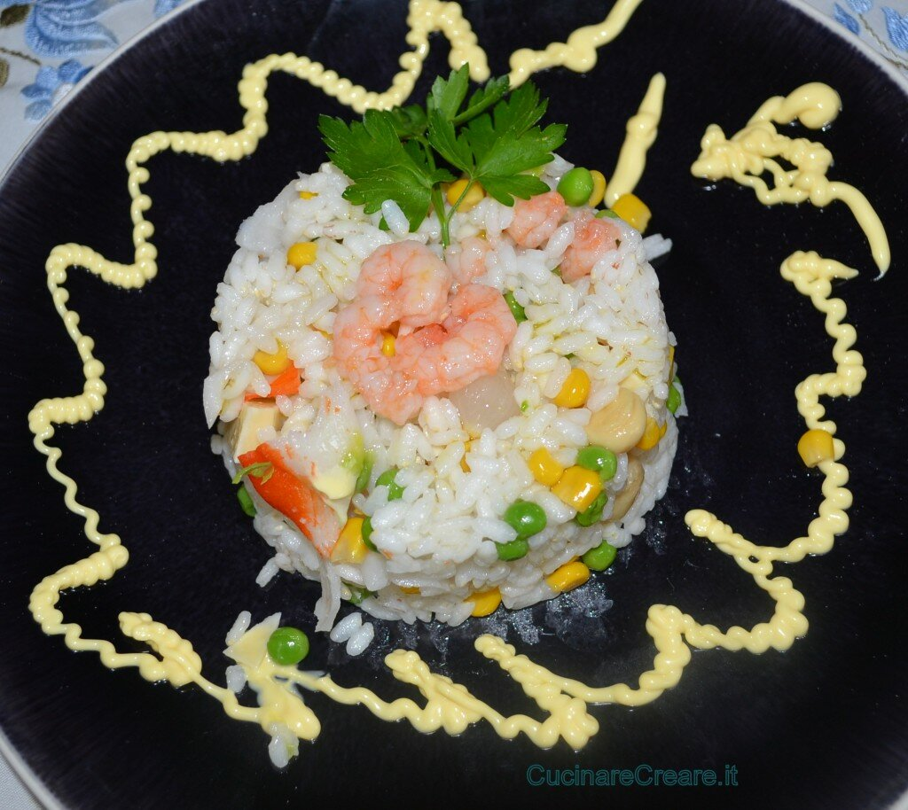
Riso freddo e pesce – Cold rice and fish
Ingredienti per 4 persone: 300 grammi di riso per insalate 200 grammi di gamberetti precotti o surgelati 100 grammi…
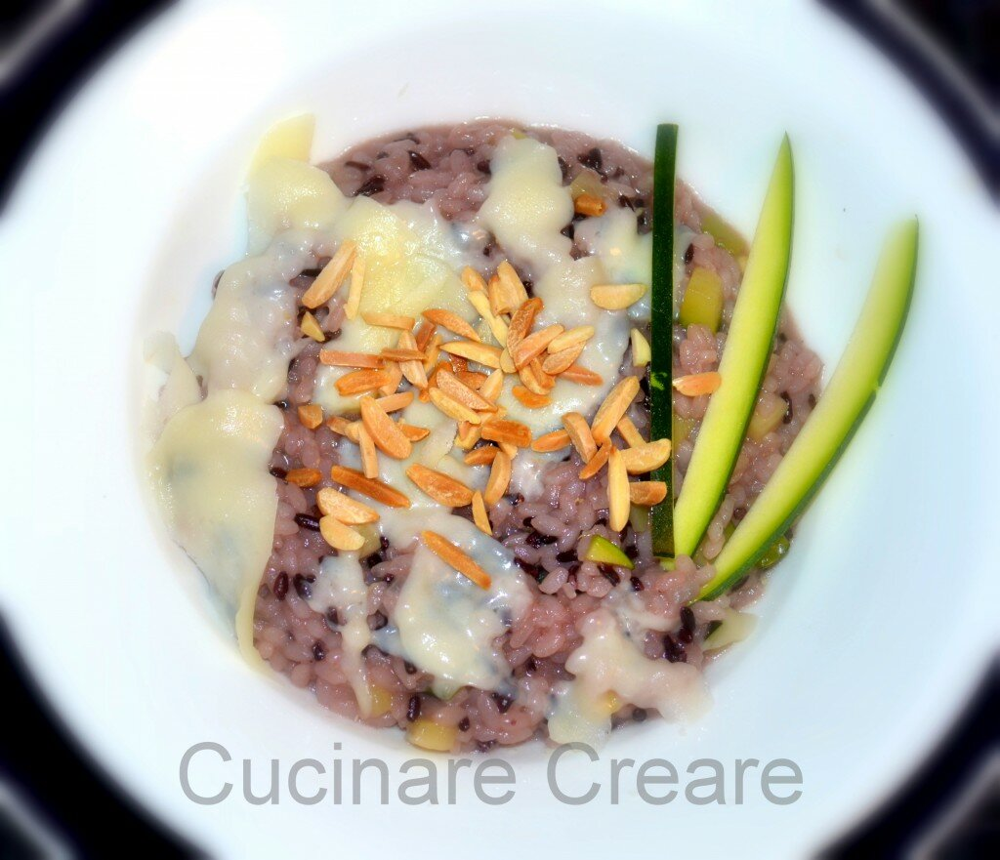
Riso venere e originario e provola affumicata
Ingredienti per 4 persone: 4 bicchieri di riso (in questo caso ho usato riso bianco piccolo-originario- e riso ven…
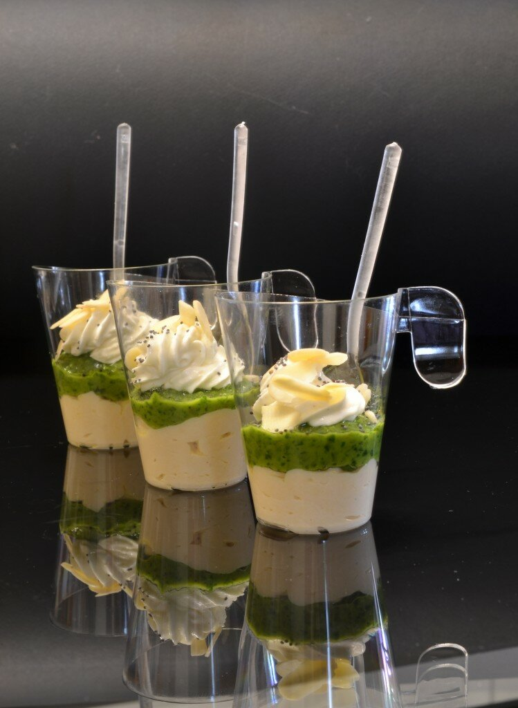
Mousse al salmone, salsa verde e spuma di formaggio
Ingredienti per 4 persone: 1 scatola di salmone sott’olio 1 mazzetto di prezzemolo 5 capperi 1 scatola piccola di t…
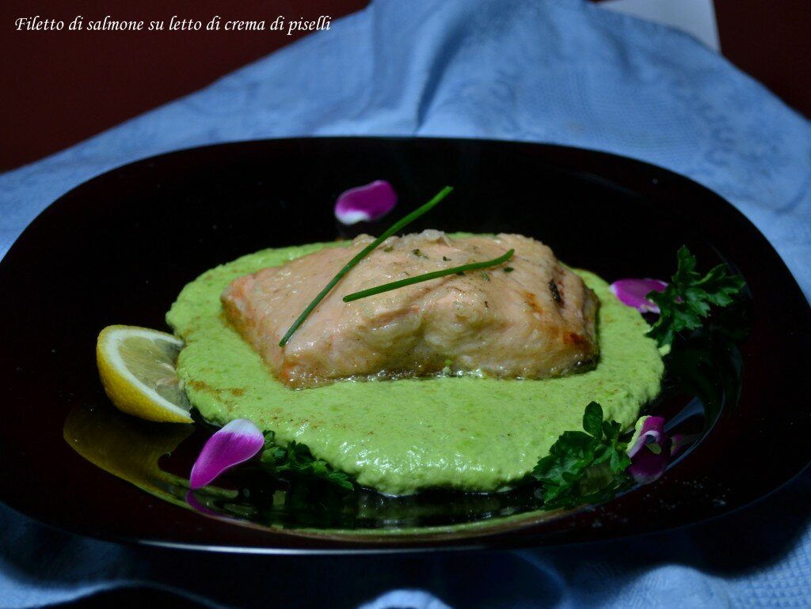
Filetto di salmone su letto di crema di piselli
Ingredienti per 4 persone: 1 trancio di filetto per persona 1 spicchio d’aglio 1 scalogno 150 grammi di piselli sur…

Crostata con frutta secca e miele
Ingredienti: 300 grammi di farina 150 grammi di burro 150 grammi di zucchero 1 vanillina 3 tuorli d’uovo 1 pizzico …
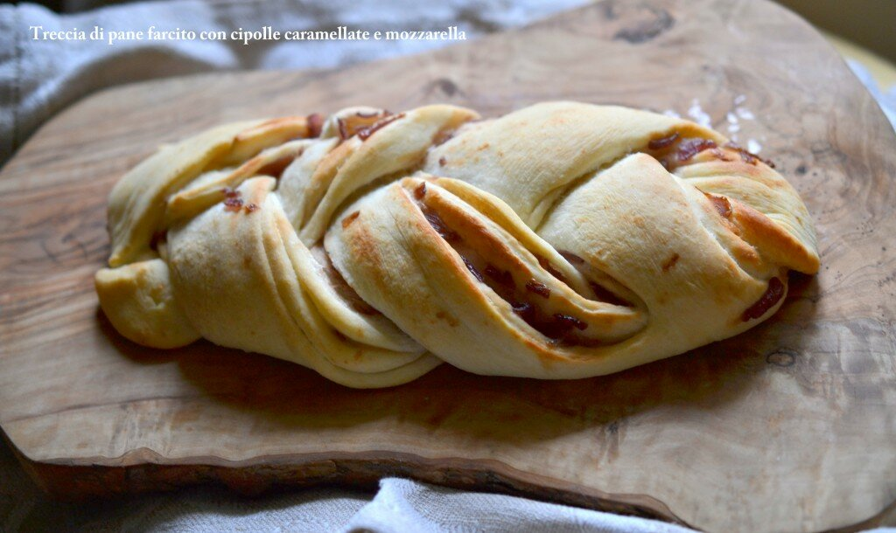
Treccia di pane con cipolle caramellate e mozzarella
Ingredienti: 500 grammi di pasta lievitata (vedi spiegazioni) 3 cipolle rosse di Tropea 2 cucchiai di zucchero 2 c…
MENU’ DELLE FESTE 2012
FIORI DI SUSHI SARDE GRATINATE CAPELLI D’ANGELO E CAPESANTE LINGUINE ALL’ASTICE ANATRA FARCITA ROTOLINI DI ROMBO FA…

Spiedini di frutta e ananas
Ingredienti: 1 ananas fragole mandarini uva banana kiwi frutta secca 200 grammi di cioccolato fondente stuzzicadent…

Crostata di frutta con frolla sablè
Ingredienti: 300 grami di farina 100 grammi di fecola di patate 150 grammi di zucchero a velo bacca di vaniglia 250…

Rose brinate
Queste bellissime rose sono state preparate per la presentazione di un bouffet di dolci. Come si preparano le rose …
Torta millefoglie alle due creme
Ingredienti: 2 rotoli di pasta sfoglia zucchero a velo nocciole sbriciolate per la crema chantilly: 6 uova, 150 gr.…

Involtini di carne e contorno di piselli e funghi
Ingredienti per 5 persone 10 fettine di carne di manzo 20 fettine di lardo 10 foglie di salvia 2 cucchiai di burro …

Crostata con frutta fresca
Crostata alla frutta Ingredienti per torta: 300 grammi farina 00 150 grammi burro morbido a pezzi 150 grammi zucche…

Baci di dama – Candy kisses lady
Ingredienti: 200 gr. di nocciole 200 gr. di farina 200 gr. di burro ammorbidito 150 gr. di zucchero di canna 100 gr…
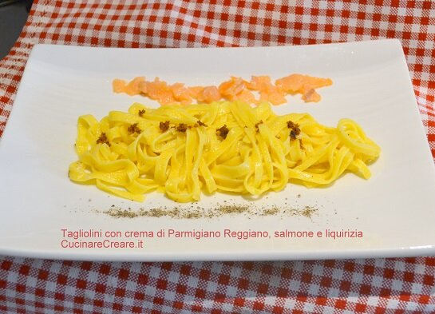
Tagliolini con crema di Parmigiano Reggiano, salmone e liquirizia
Ingredienti per 5 persone: 250 grammi di tagliolini all’uovo 100 grammi di salmone affumicato 150 grammi di Parmigi…
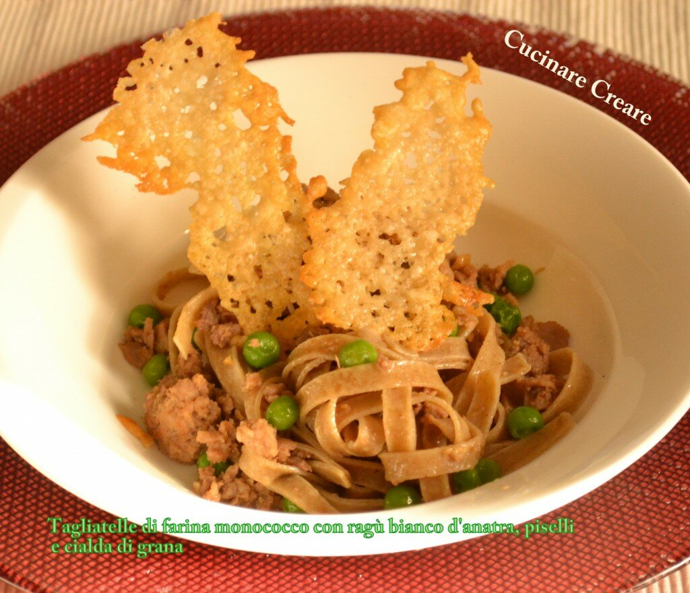
Tagliatelle con farina di monococco con ragù bianco e cialda di Grana Padano
Ingredienti per 4 persone: 250 grammi di tagliatelle con farina di monococco 1 petto d’anatra 1 bicchiere di vino b…

Torta di mandorle “senza glutine”
Questa è la ricetta di Luigi, sempre attento ad una corretta alimentazione, pertanto consiglia un dolce adatto a t…
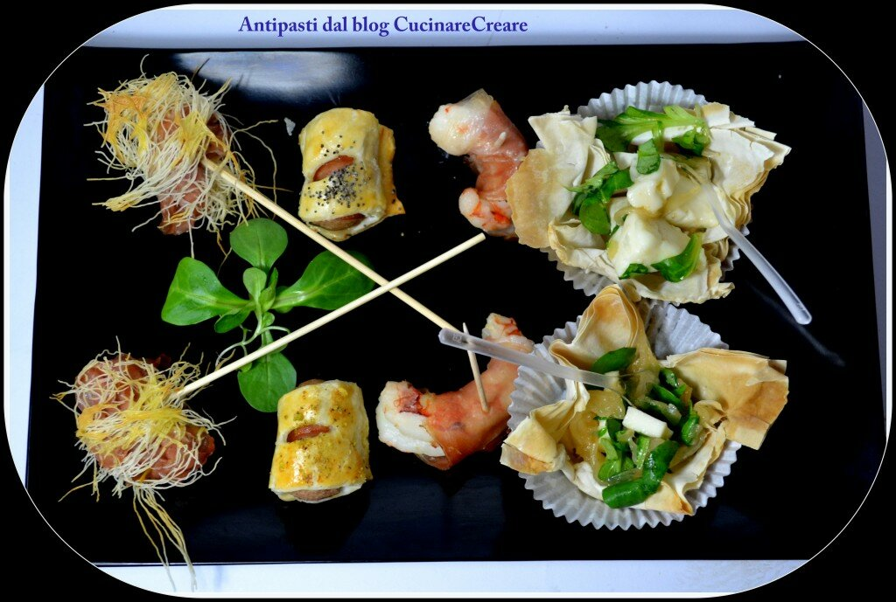
Antipasti fantasia di Cucinare Creare
da sinistra -> Bocconcini di mortadella avvolti in pasta Kataifi al forno Fagottini di sfoglia ripiena di wurstel C…
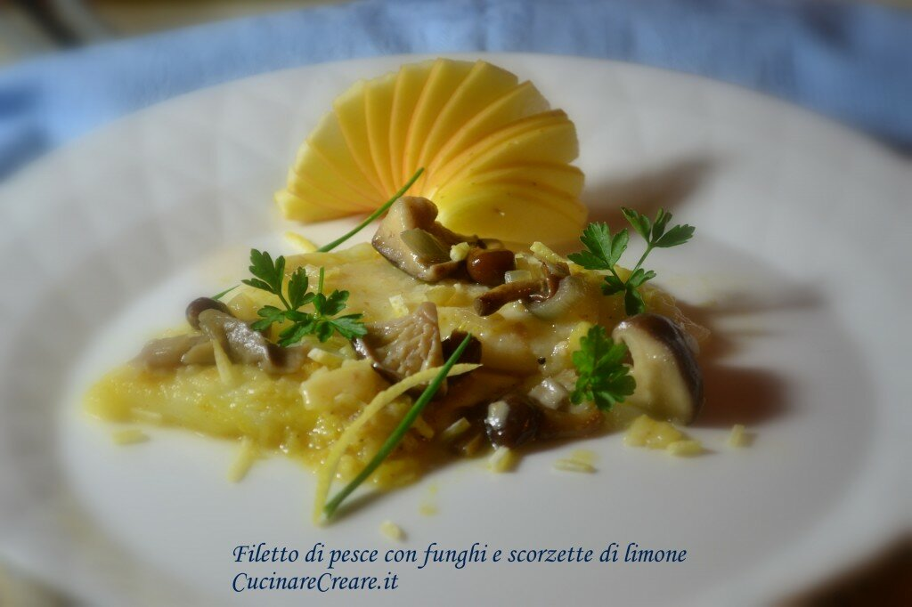
Filetti di pesce con funghi e scorzette di limone
Ingredienti per 4 persone: 8 filettini di pesce (sogliola o a vs piacere) Vino bianco Funghi misti 150 grammi circa…
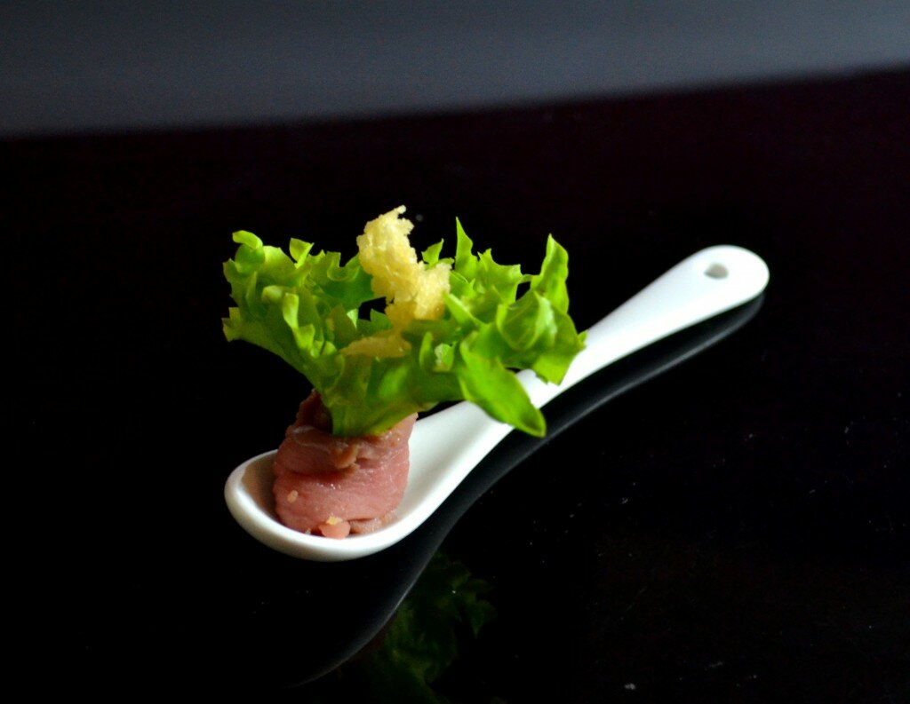
Cilindretto di carne marinata all’aceto balsamico, ciuffo di insalata e cialda di formaggio
Ingredienti per 4 persone: 1 fetta di carne tenerissima 50 grammi di Parmigiano Reggiano 1 tazzina da caffè di olio…

Tartufi con farina di mandorle
200 grammi di farina di mandorle 100 grammi di cioccolato fondente 100 grammi di zucchero 2 cucchiai di burrogranel…

Torta di noci e cioccolato (senza glutine)
Torta senza glutine Ingredienti : 150 grammi di gherigli di noci (o nocciole) 150 grammi di cioccolato fondente 150…
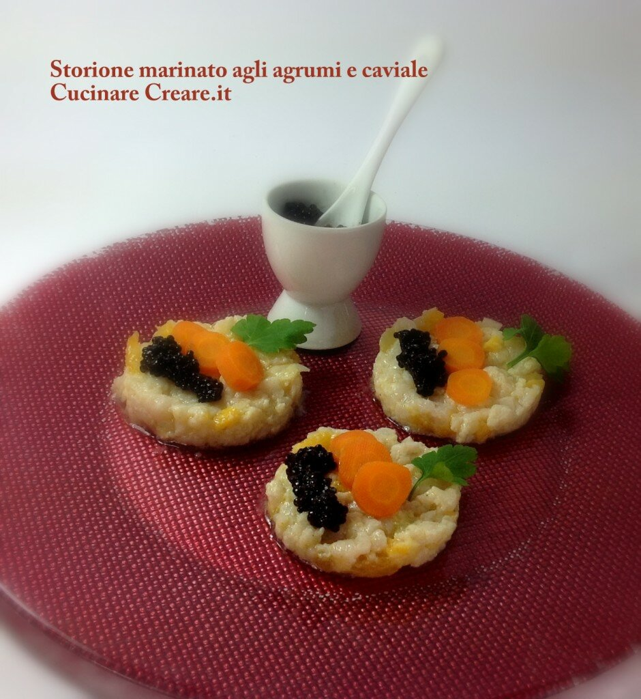
Storione marinato agli agrumi e caviale
Ingredienti per 5 persone: 300 grammi di storione fresco (o filetto di pesce a piacere) 1 arancia 1 limone sale e p…
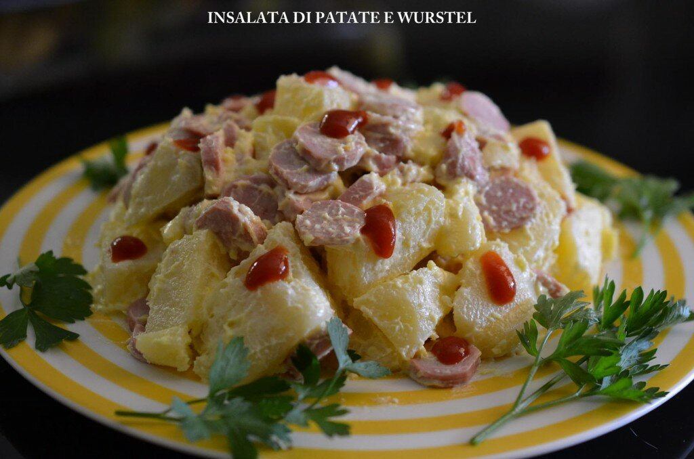
Insalata di patate e wurstel – Potatoes, wurstel, eggs salad
Ingredienti per 4 persone: 4 patate 1 confezione di 3 wurstel grandi 150 grammi di maionese 4 uova Preparazione: le…
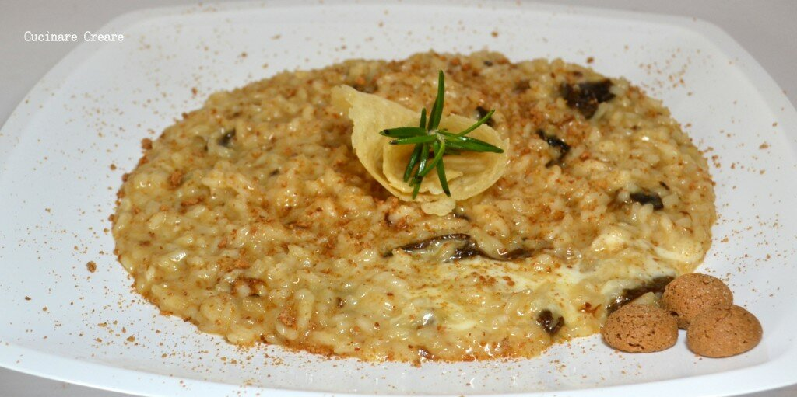
Risotto con prugne, amaretti e zenzero
Ingredienti per 4 persone: 4 pugnetti di riso vialone nano 1 cipolla 2 bicchieri di vino bianco (Lugana) 10 amarett…
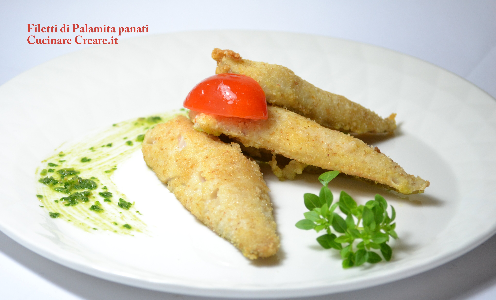
Filetti di Palamita panati e cotti al forno
Ingredienti per 4 persone: 8 filetti di pesce farina bianca 00 pane tritato 2 uova e ½ mezzo bicchiere di latte bas…
Cannoli salati – salt cannolos
Ingredienti: 1 rotolo di pasta sfoglia 100 grammi di mortadella 100 grammi di fontina morbida pesto o salsa verde p…
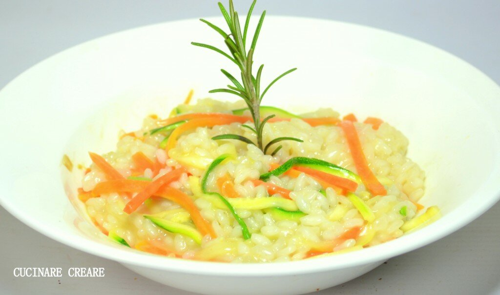
Risotto arlecchino con verdure croccanti
Ingredienti per f4 – 5 persone: 5 bicchieri di riso arborio 2 carote 2 cipolle 2 zucchine brodo vegetale 50 grammi …
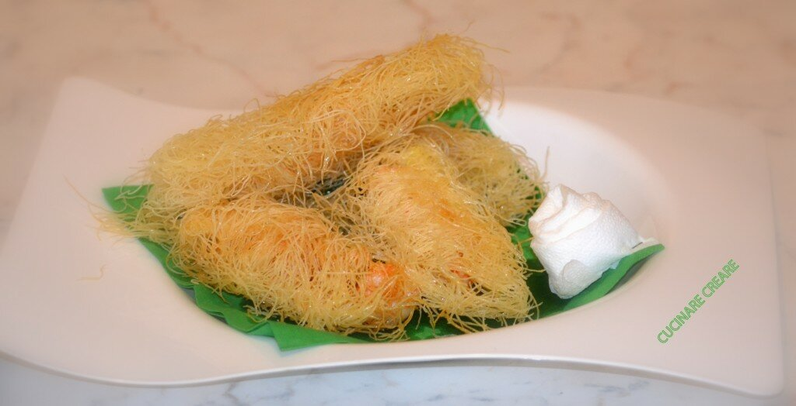
Cannoli di pasta Kataifi ripieni di gamberi e zucchine
Ingredienti per 4 persone ANTIPASTO 1 rotolo di pasta Kataifi (in genere si trova surgelata in negozi etnici o gran…
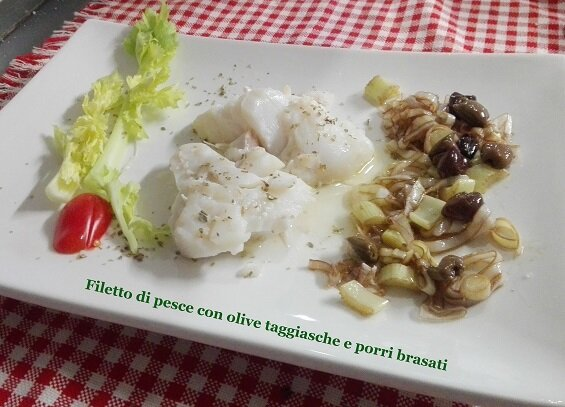
Filetto di pesce con olive taggiasche e porri brasati
Ingredienti per 4 persone: 4 filetti di pesce a scelta, secondo il proprio gusto 1 porro 2 coste di sedano 30 olive…
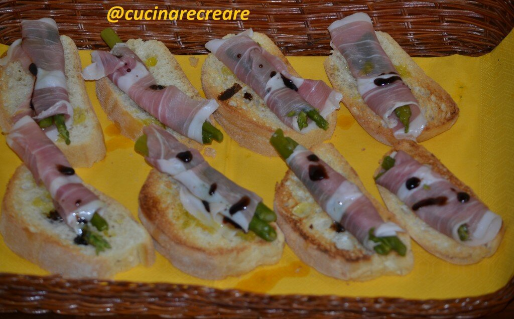
Crostini con prosciutto crudo e asparagi Crostini with asparagus
Ingredienti per 5 persone: 1 pane da bruschetta 2 ettogrammi di prosciutto crudo 20 asparagi circa olio extra vergi…

Stracotto di cavallo e polenta
Ingredienti per 4 – 5 persone 1 kilogrammo circa di carne adatta per stracotto o brasato sedano, carota e cipolla v…
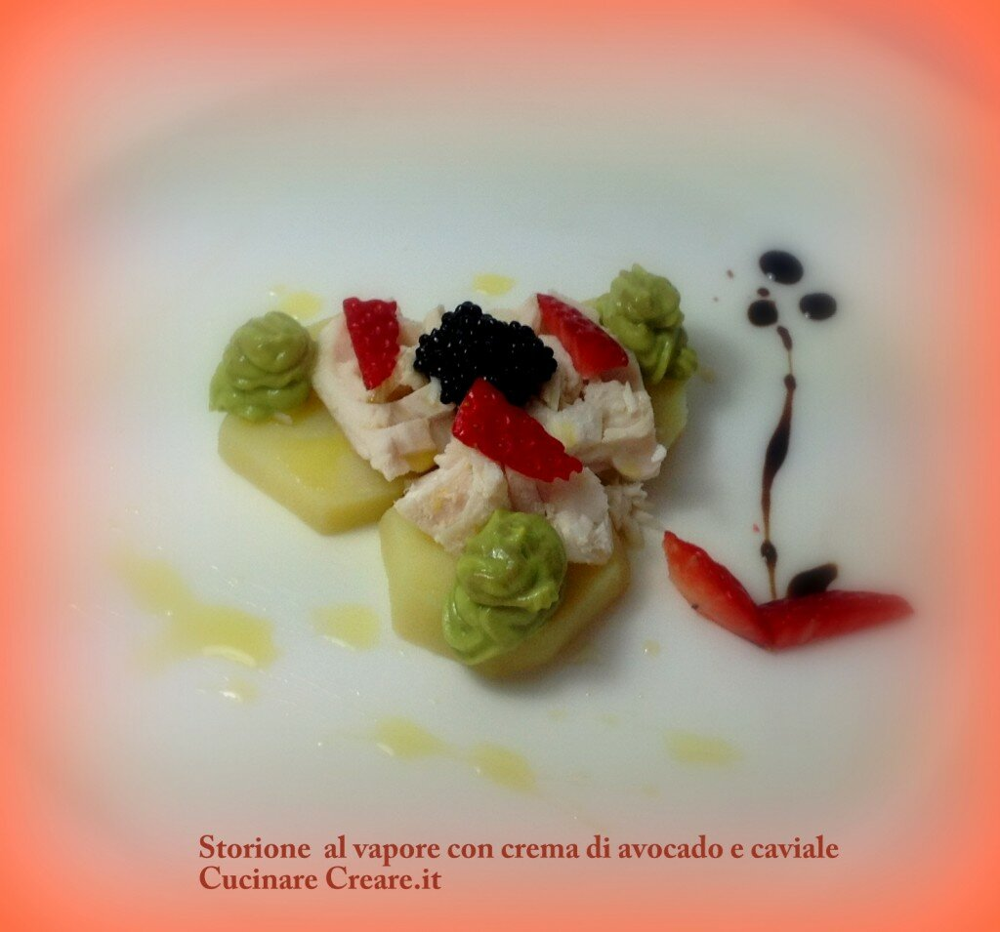
Storione al vapore con salsa di avocado, caviale e fragole
Ingredienti per 4 persone: 300 grammi di storione fresco (o pesce a piacere) 2 patate lesse brodo vegetale per la c…
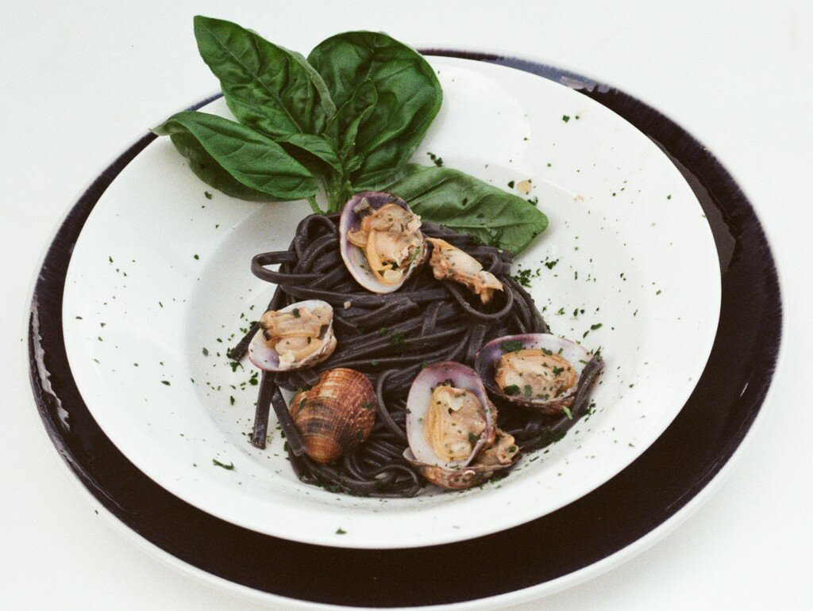
Tagliatelle al nero di seppia e vongole veraci
Ingredienti: per 5 persone 250 grammi di tagliatelle al nero di seppia 1 kilogrammo di vongole veraci 1 bicchiere d…

Lingue di gatto
Ingredienti. 250 grammi di farina 6 albumi 250 grammi di burro 250 grammi di zucchero a velo 1 bustina di vanillina…

Polenta con verza e salsiccia
Ingredienti per 4 persone: 4 salsicce 1 verza piccola 2 cucchiai di concentrato di pomodoro 2 cucchiai di aceto sal…
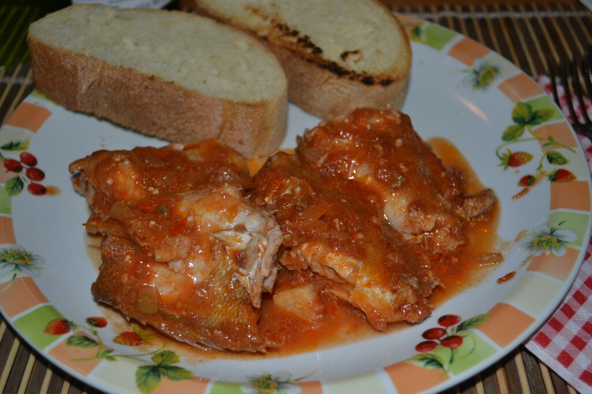
Burrida – Ricetta tipica sarda
Ingredienti per 4 persone: 1 kg di pesce assortito in tranci (palom¬bo, gattuccio, cernia, ecc.) 1 bicchiere di vin…
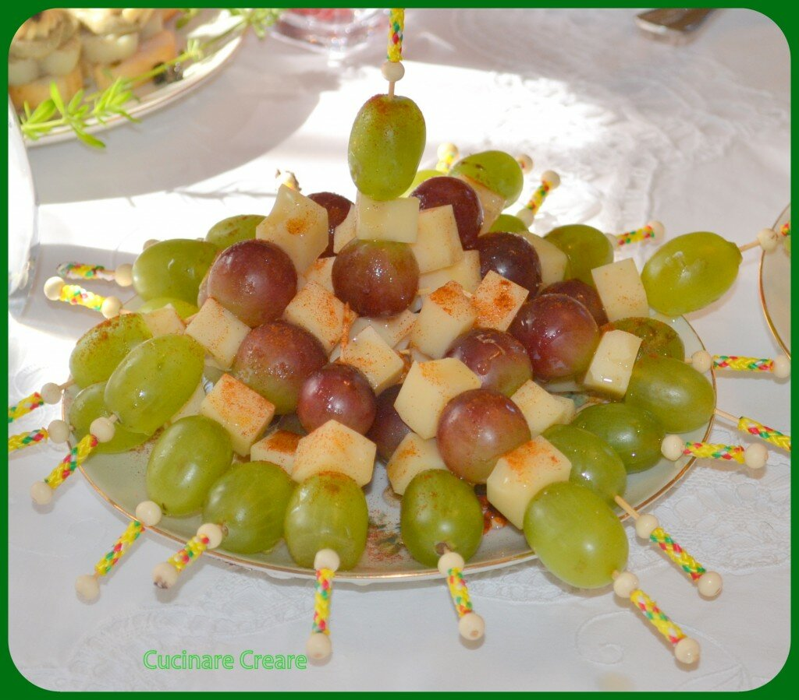
Spiedini di formaggio e uva con miele e paprika
Ingredienti: uva bianca e rossa formaggio Emmental (o altro) miele e paprika Comporre gli spiedini, versare del mie…
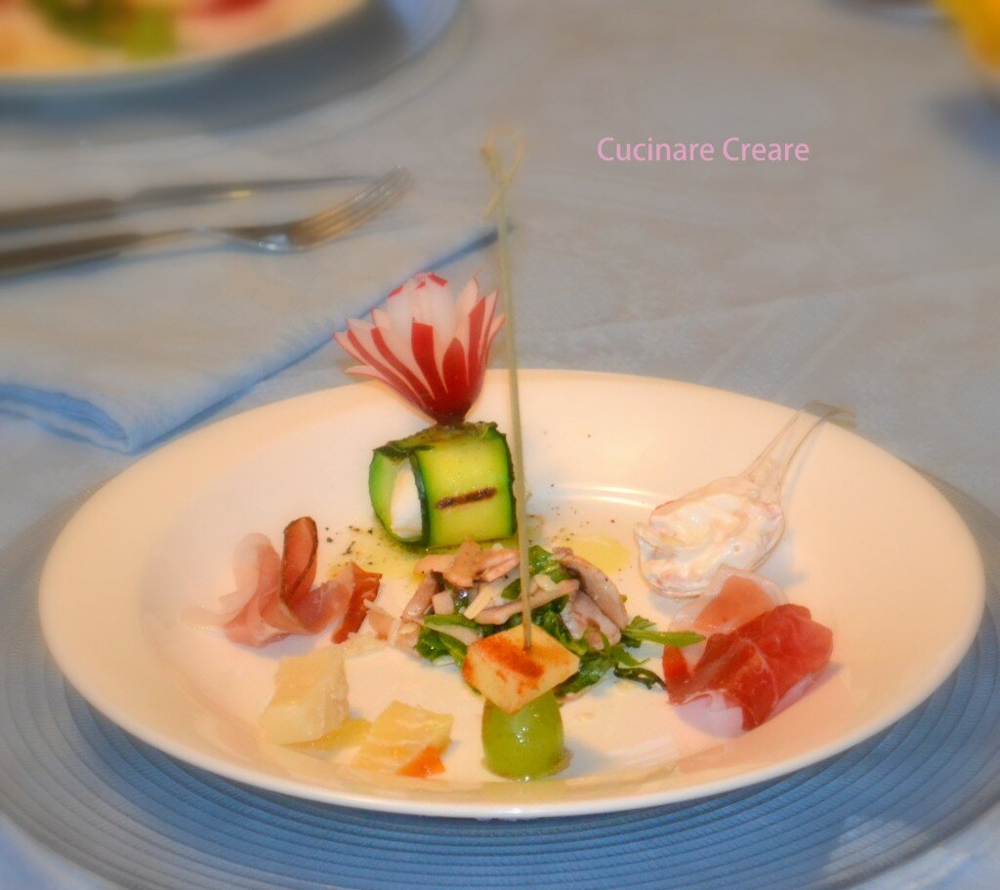
Antipasto semplice e gustoso
Un modo veloce per preparare un antipasto di vari ingredienti, colorato, dolce e salato da preparare in anticipo. I…
Risotto con prugne, amaretti e zenzero
Ingredienti per 4 persone: 4 pugnetti di riso vialone nano 1 cipolla 2 bicchieri di vino bianco (Lugana) 10 amarett…